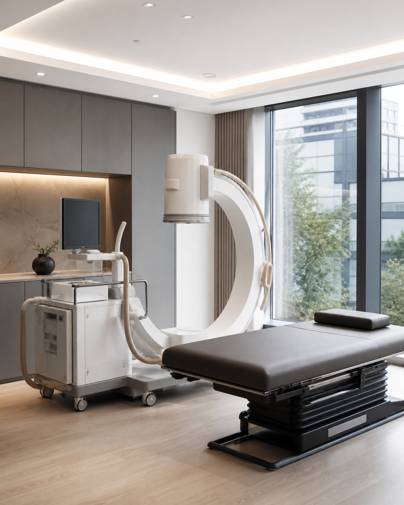
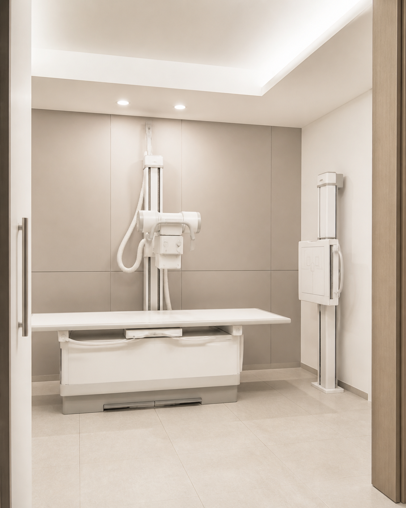
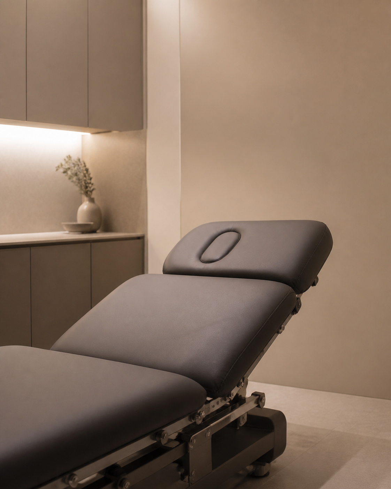
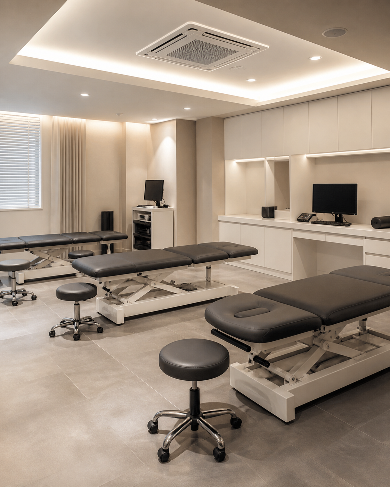

처음 다짐했던 그 마음 그대로 정성껏, 그리고 진심을 다해
여의도기통찬의원의 약속
'기(氣)가 통(通)하면 찬(燦) 밝아진다'는 뜻을 담고 있습니다.
환자의 신체와 삶이 다시 활력을 찾아 빛나게 한다는 의미를 담았습니다.
이 이름속에 통증의 숨은 원인까지 기통차게 해결하겠다는
여의도기통찬의원의 약속이 담겨 있습니다.
YEOUIDO GITONG CHAN
여의도기통찬의
여의도기통찬의
5가지의 진료 원칙
여의도기통찬의원이 지켜가는 치료의 기준입니다.
환자의 몸과 마음을 함께 살피는 바른 진료를 약속합니다.
-
01 비수술·보존
치료 우선 -
02 충분한 경청과
정성 어린 설명 -
03 스테로이드 부작용
걱정 없는 치료 -
04 과잉 진료 없는
양심적 진료 -
05 환자를 위해 타협하지
않는 진료 원칙
환자분에게 해가 되지 않는 치료
내 가족에게도 선뜻 제안할 수 있는
안전한 치료만을 고집합니다.
환자를 치료할 떄 만큼은 누구보다 집요하게
작은 통증도, 원인 모를 불편함도 가볍게 넘기지 않고
당신의 평생 건강을 기통차게 지켜주는 따뜻한 주치의가
되겠습니다.
YEOUIDO GITONG CHAN
여의도기통찬의원은
여의도기통찬의원은
단순 증상 치료를 지양하고 근본 원인을 찾아
맞춤형 치료를 제공합니다.



